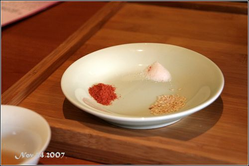
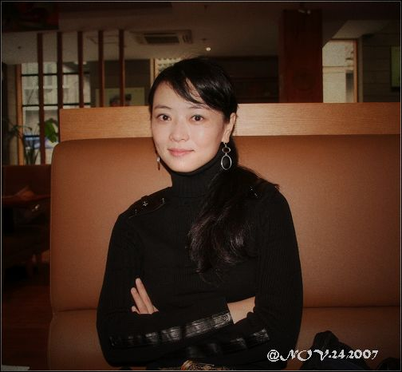

虎子穿着黑色的瘦身西装，黑色长裤，白色体恤，分别十多年后第三次见到他，这次和去年一样来南京参加“靓妆频道”的模特大赛。听说前阵子和小珂在德国演出，明年1月到4月间还会在德国，希望我能在春节的时候做个计划去德国，可以省去住宿费用，呵呵~我们公司可怜的假期连去趟西藏都不够，10天假要分开休，假期怎么休是要听组织的话的。
虎子组了一个乐队叫“宠物同谋”，主唱helen是美籍华人，USC的高才生，喜爱重摇滚乐，但是爵士乐，流行乐，民谣曲风都可涉猎。同时，她也是MTV频道、CCTV9及国际广播电台的主持人。另外的成员还包括乐队的灵魂之一来自北京最具舞台效果的乐队烦人鼓手张蔚。据说主唱颇有嬉皮风格。嬉皮文化被看作是一个对常人社会有破坏性威胁的非主流文化。今天，对待它们的态度就友善多了，而且还夹杂着一些怀旧色彩，或许这个词还是指那些“时髦的”人？今天仍然可以寻觅到嬉皮的身影，但必须仔细去找。在阿姆斯特丹的咖啡馆里、在果阿的海滩上，或在深山里的艺术家聚集地中都可以找到嬉皮。他们不再被人们警惕为危险或破坏分子，而是一个时代观念混乱、稍显荒唐的群体。而与一些今天的亚文化群相比，嬉皮文化似乎是相当积极向上且温顺的。毕竟，他们只是一群过度理想化的年轻人，脑中充斥着缔造更美好世界的浪漫想法而已。
从2005年虎子出了《两个人的旅行》专辑之后，到现在都没出专辑，希望他能抽出时间来做自己的音乐，期待他的第五张音乐专辑。
这一年的确忙，最明显的是居然到现在没有用休假，只一件事情便挤占了所有业余时间。可这让我感到兴奋，这是我喜爱的事情。工作却恰恰相反，泯灭人性和对生活的热情。每次见到这些老朋友，我会质疑自己的人生选择，明明是自由的灵魂却生硬的被装在一个袋子里。法国思想家帕斯尔说“人只是一只芦苇,是宇宙间最脆弱的东西。但人是一只会思想的芦苇”。人的生命是脆弱的,宇宙间任何一件东西都能置人于死地,然而人却成了万物的主宰,这正是因为人有一颗会思想的灵魂,人因为思想而高贵。然而当人的思想被关在一个笼子里而失去了飞翔的自由时,人还是“人”吗？
“你应该流浪几年”虎子说。
餐厅里的茶和调味品





8 Responses to “老友.聚”
2007-11-27
Dear Christina.
这篇文章让我很感动, 特别是最后一句”你应该流浪几年”。 让我想起了很久前刚开始读你的BLOG的那些感动， 应该过去五年了吧。。。 我们都各自成长着， 有时有些恍然，为年华逝去， 为物事人非。。。
而我此刻读着你， 你还是那个我喜爱的， 真实得让人心动的女孩。我愿记住这样的一份欣喜， 感动。。。
2007-11-28
一茶一座？
2007-11-28
试试穿有颜色的衣服，会带给你不同的心情。
2007-11-28
呵呵，最后还是没忘秀一把自己。
2007-11-29
法国的思想家应该是帕斯卡尔吧Pascal~估计是笔误
L’homme n’est qu’un roseau, le plus faible de la nature; mais c’est un roseau pensant.
人只是芦苇，自然界最脆弱的生命，但人是一支会思考的芦苇。
2007-11-29
VINTAGE正当时~~那段话为什么我想到的是电影”野芦苇”,其实是没什么关系的.
2007-12-02
奇怪。。竟然发现你戴眼镜比不戴眼镜可爱。。。哈哈哈。。
2008-01-12
Je suis en train d’accomplir une composition française s’agissant de Pascal “L’homme n’est qu’un roseau pensant”, je voit votre blog par hazard. Il me touche profondément. J’envisage le carrefort de la vie… Quelle sera mon choix? L’ art, la liberté et la pauvreté...ou bien l’entreprise célebre et la vie matérielle…j’ai besoin de courage je crois.
Leave A Reply
存档只读，评论已关闭。